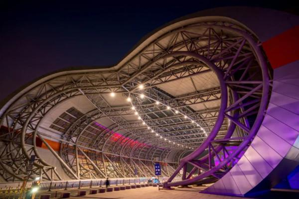

淄博市情概况
来源：淄博文旅局

淄博市，简称“淄”，齐国故都，山东省辖地级市，Ⅱ型大城市 [136]， 国务院批复确定的山东区域性中心城市、现代工业城市，重要的石油化工基地。 [1] [109]淄博地处中国华东地区、山东省中部，南接临沂，北接东营、滨州， 东接潍坊，西接济南，位于黄河三角洲高效生态经济区、 山东半岛蓝色经济区两大国家战略经济区与济南都市圈交汇处， 是山东半岛城市群核心城市之一，三线城市 [156]。 [3-4]截至2023年， 全市下辖5个区，3个县和3个功能区，总面积5965平方千米 [105]，建成区面积341.9平方千米。 [2] [104] [112]2023年末，淄博市常住人口467.4万人，城镇化率75.66%。 [161]
淄博市的临淄区是国家历史文化名城，历史悠久，淄博的临淄是古代齐国的首都 [124]， 为齐文化的发祥地、世界足球起源地，有“东方古罗马”之称 [124]，“淄博烧烤”已经成为淄博的新名片 [148]， 淄博烧烤节于每年五一前后举办 [150]。淄博这个地名形成于20世纪20年代初期，原为淄川、博山两地的合称。 淄博是全国文明城市之一。 [7]
淄博是山水结合的组团式城市（组群式城市） [8]，有博山国家级风景名胜区 [9]；也是资源型城市和全国老工业基地 [10]，全国首批产业转型升级示范区 [11]，设有山东省区域性股权交易市场（齐鲁股权交易中心）。淄博高新技术产业开发区， 属山东半岛国家自主创新示范区 [12-13]；淄博市张店区为国家大众创业万众创新示范基地。 2020年6月，经中央依法治国委入选为第一批全国法治政府建设示范地区和项目名单。 [14]
2023年，淄博市生产总值为4561.79亿元，按不变价格计算，比上年增长5.5%。

 2089593270@qqq.com
2089593270@qqq.com